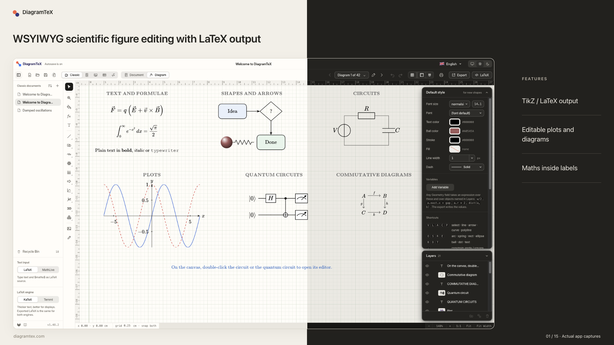
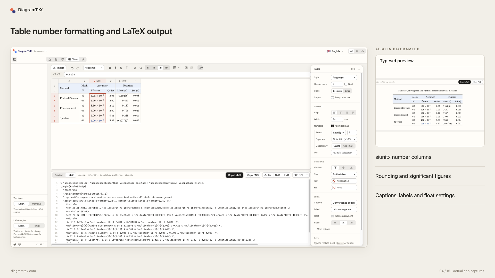
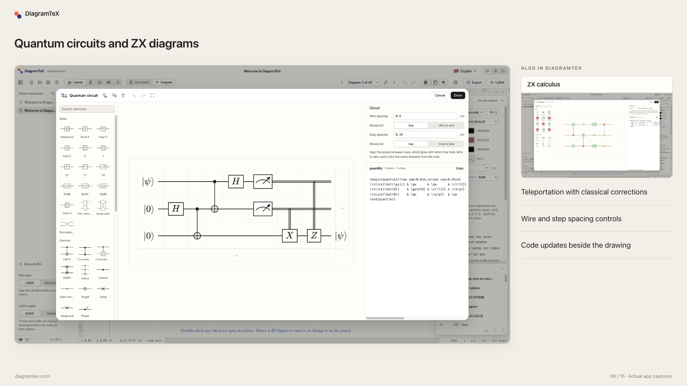
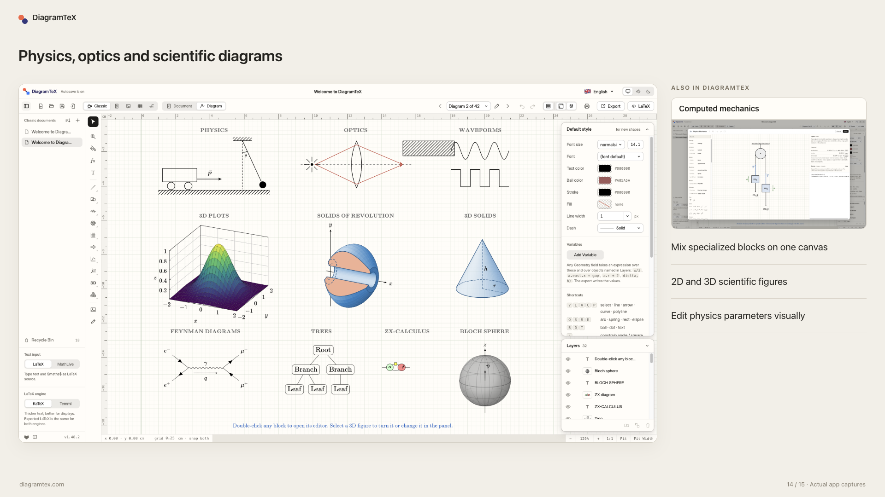

WSYIWYG scientific figure editing with LaTeX output Selection, alignment, snapping, command search and export
Selection, alignment, snapping, command search and export Table editing with grouped headers and merged cells
Table editing with grouped headers and merged cells
Table number formatting and LaTeX output Circuit editing with circuitikz output
Circuit editing with circuitikz output
Quantum circuits and ZX diagrams Chemical structures and reaction schemes
Chemical structures and reaction schemes Timing diagrams and state machines
Timing diagrams and state machines Karnaugh maps and protocol field layouts
Karnaugh maps and protocol field layouts UML class and sequence diagrams
UML class and sequence diagrams Commutative diagrams with tikz-cd and xymatrix
Commutative diagrams with tikz-cd and xymatrix Tree diagrams with forest output
Tree diagrams with forest output 2D and 3D geometry editing
2D and 3D geometry editing
Physics, optics and scientific diagrams Documents with figures and formula image export
Documents with figures and formula image export